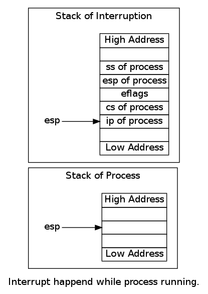

Table of Contents
Our process is running at level 1, so when interrupt happens, ring 1 change to ring 0, stack switch to sp0 in TSS.
So every process need this special area, we define a struct called "stackframe_t". When a process runs, move the end address of the struct to sp0 in TSS. And when interrupt happens, stack swich to end of the "stackframe_t", push ip, cs and so on into it.
typedef struct stackframe_s
{
uint32_t gs;
uint32_t fs;
uint32_t es;
uint32_t ds;
uint32_t edi;
uint32_t esi;
uint32_t ebp;
uint32_t kernel_esp;
uint32_t ebx;
uint32_t edx;
uint32_t ecx;
uint32_t eax;
uint32_t retaddr;
uint32_t eip;
uint32_t cs;
uint32_t eflags;
uint32_t esp;
uint32_t ss;
}stackframe_t;
Each process has a stackframe stored in proc_t.
#define PROC_NAME_MAX 16
typedef struct proc_s
{
stackframe_t regs;
uint16_t ldt_sel;
descriptor_t ldts[LDT_SIZE];
uint32_t pid;
char proc_name[PROC_NAME_MAX];
}proc_t;